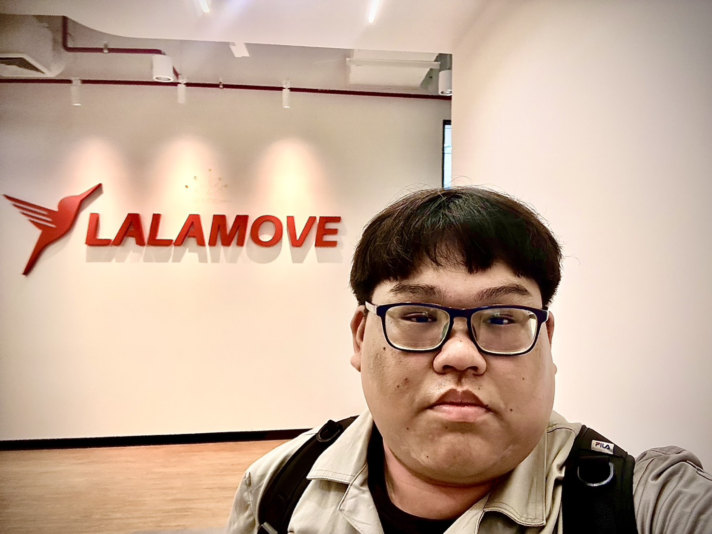
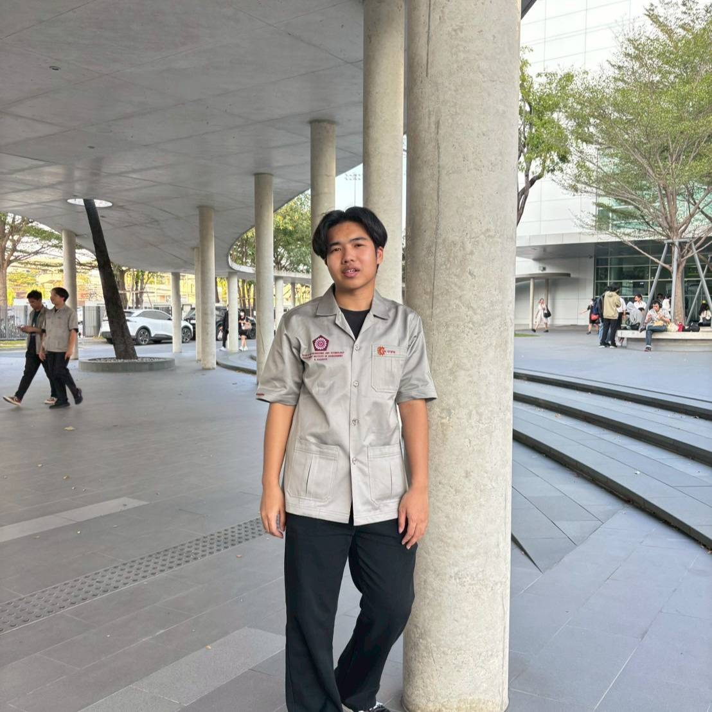
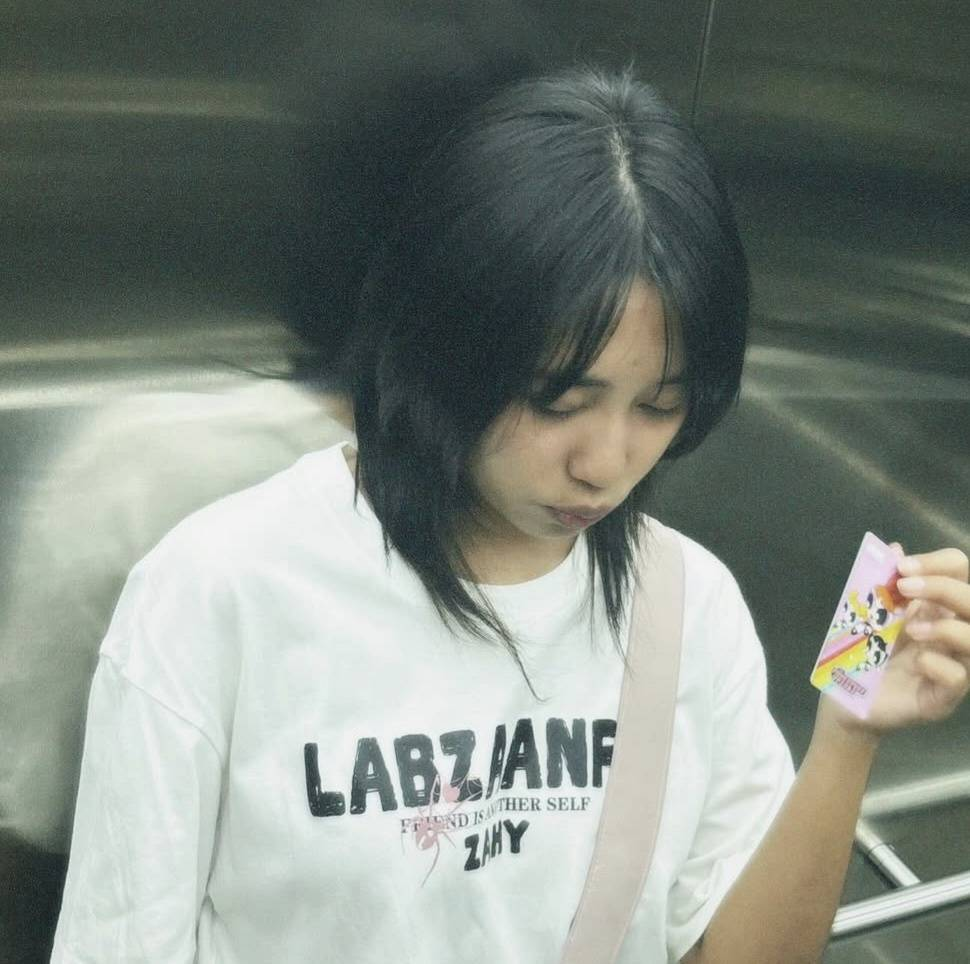

พวกเราอยากช่วยให้ร้านอาหารสั่งวัตถุดิบได้พอดีกับยอดขาย โดยใช้ข้อมูลร่วมกับประสบการณ์ของผู้จัดการ เพื่อลดของเหลือทิ้งและวางแผนต้นทุนได้ดีขึ้น
จากการวิเคราะห์ของทีม ร้านอาหารที่มีหลายสาขาต้องวางแผนของสดให้สอดคล้องกับลูกค้าที่ต่างกันในแต่ละพื้นที่ เราจึงสนใจว่าข้อมูลจะช่วยให้แต่ละสาขาสั่งของได้เหมาะสมขึ้นอย่างไร
“เราอยากให้ผู้จัดการใช้ข้อมูลร่วมกับประสบการณ์ในการวางแผน โดยมีระบบช่วยคำนวณงานที่ซ้ำและใช้เวลา เพื่อให้มีเวลาตรวจสถานการณ์จริงและตัดสินใจได้รอบคอบขึ้น”
CurveQz มีแนวทางช่วยตอบคำถามว่า “รอบถัดไปควรสั่งวัตถุดิบอะไร และเท่าไร” โดยเริ่มทดสอบจากไฟล์ยอดขาย ก่อนพัฒนาการเชื่อมต่อ POS ผ่าน API ตามข้อมูลและเงื่อนไขที่ผู้ให้บริการรองรับ
| รูปสมาชิก | ตำแหน่ง (Role) | ชื่อ–นามสกุล / รหัสนักศึกษา | ขอบเขตความรับผิดชอบหลักในโครงการ |
|---|---|---|---|
| CEO & DATA | นายศนุชา สอนเดช 6752300542 |
กำหนดทิศทางโครงการ ประเมินความคุ้มค่าทางธุรกิจ และออกแบบกระบวนการจัดการข้อมูลกับโครงสร้างสูตรอาหาร (Data Pipeline & Recipe BOM) | |
 |
CTO | นายนัธทวัฒน์ อุ้มญาติ 6752300364 |
ออกแบบสถาปัตยกรรมระบบ กำกับการพัฒนาระบบหลังบ้าน การเชื่อมต่อ POS API และการประมวลผลด้วย Machine Learning |
| DEVOPS | นายอาณัติ หลีเกี๊ยะ 6752300666 |
ดูแลโครงสร้างพื้นฐานคลาวด์ การจัดสภาพแวดล้อมด้วย Docker และกระบวนการทดสอบและส่งมอบระบบอัตโนมัติ (CI/CD) รวมถึงการนำโมเดลไปใช้งาน | |
 |
SECURITY & IT OPS | นายกษิดิ์เดช คู่คิด 6752300712 |
ดูแลความมั่นคงปลอดภัยของระบบและข้อมูล กำหนดสิทธิ์การเข้าถึง API และติดตามความพร้อมใช้งานของระบบ |
| QA | นายก้องภพ สุขทรัพย์ 6752300534 |
วางแผนและดำเนินการทดสอบคุณภาพซอฟต์แวร์ ตรวจสอบการคำนวณวัตถุดิบและคำแนะนำสั่งซื้อ รวมถึงประสานการทดสอบการยอมรับโดยผู้ใช้ (UAT) | |
 |
UX/UI & MARKET | นางสาวธนัชพร ช่วยนาค 6752300861 |
ศึกษาความต้องการของผู้ใช้และตลาด ออกแบบประสบการณ์และส่วนติดต่อผู้ใช้ (UX/UI) สำหรับผู้จัดการสาขาและแดชบอร์ดสำนักงานใหญ่ |